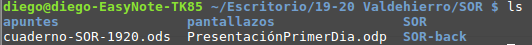
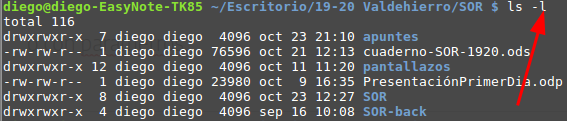
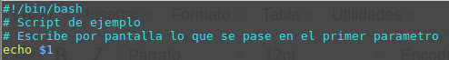
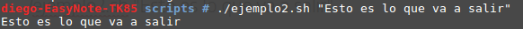
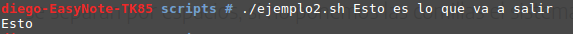
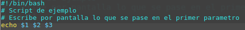
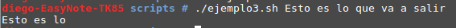

Los parámetros posicionales o argumentos son valores que acompañan a la invocación del comando y que permiten darle datos de entrada al comando para que trabaje con ellos. Por ejemplo, podemos usar el comando para listar el contenido de un directorio sin parametros:

o con parametros:

Nuestros script pueden tener parametros. Podemos acceder a ellos mediante sus nombres, que son: $1, $2, $3, ... Como ves lo que se indica es la posición del parametro, pues los parametros se ponen detras del nombre del script, como una lista separada por espacios. Es decir, si tuvieramos un script llamado ejemplo2.sh, con el siguiente contenido:

Podriamos invocar el script de la siguiente forma:

Como puedes ver la frase va entre comillas dobles. Esto es porque, como hemos dicho, los parametros se separan por espacios, si no ponemos las comillas el sistema pensara que cada palabra es un parametro. Mira lo que pasa si no ponemos las comillas:

Si modificamos el código de la siguiente forma:

Y lo invocamos sin comillas. Observa la salida:
